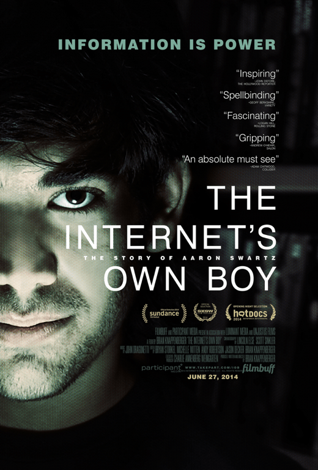
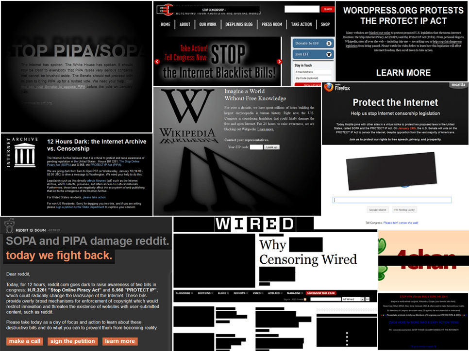
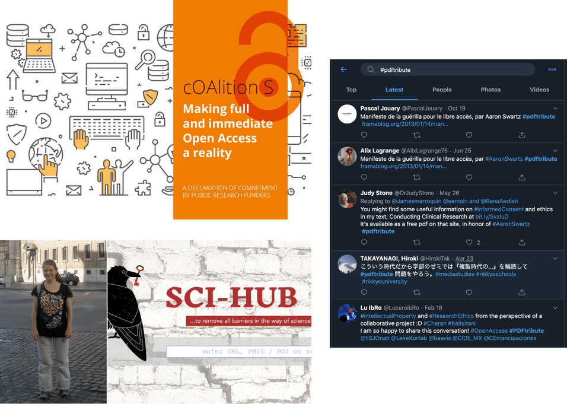

信息自由的乌托邦与现实
2019 · 11 · 21
纽约文化沙龙分享内容，引文整理自现场讨论。
美国上世纪80年代，互联网协议刚开始出现，也刚从越战的泥潭中走出来，还依然笼罩在冷战的核阴影之中。大量民众意识到政府可以做出愚蠢的决定，对政府极不信任。
许多计算机科学家和hacker研究如何通过加密来进行信息交互和身份认证，防止政府控制和监听人民，最终自动化人与人之间的信任甚至部分政府职能。
85年David Chaum一篇影响深远的论文算是典型，里面提出了一个保证匿名性、同时提供身份认证的系统。论文标题就说，是为了让big brother过时。
引言中也预言了三十多年后中心化系统的问题：数据挖掘能够提取民众隐私信息，无所不在的监控造成“寒蝉效应”、把“墙”直接筑入人民心中，中心化平台本身易受攻击、造成数据泄漏。

同时代的其他人设计出了不同类型的加密模式、电子货币系统、可验证结果的投票系统等，都在试图不借助中心达成匿名用户间的信任。
88年Timothy May离开英特尔后，仿照《共产党宣言》开头，写了个Crypto Anarchist Manifesto，里面总结了时人对理想数字空间的想象：一个自由交换和交易信息的市场，不受第三方的监听和审查。

92年May和另外几个人发起了一个叫Cypherpunk Maillist的邮件列表，参与者是一帮实干派，催生了很多影响深远的项目，包括wikileaks和比特币。不过比wikileaks和比特币使用更广泛的，是PGP协议，它的故事也非常有意思。
PGP的用途在于加密信息和验证身份，能防止监听和假冒。发明者Zimmermann自己经常参与反核运动，也喜欢把PGP的代码免费分享给其他草根政治运动的群体。PGP开始在世界范围内被广泛使用，但它用的算法被联邦政府算作军火一类，禁止出口，联邦政府也开始调查Zimmermann。
结果Zimmermann用了个非常巧妙的办法：他把PGP的全部代码印在书上出版了，用户可以扫描下来识别回代码。因为书籍是出版物，属于言论自由范畴，受到美国宪法保护。

站在读代码者的角度，代码的确是种言论，毕竟写下来的一套思维和算法；但站在使用者的角度，软件技术像硬件技术一样，可以被专利或者海关封锁。这算是两种世界观的第一次碰撞。
在此之后又许多人和组织多次起诉联邦政府，最终使得代码可以像言论一样受到保护。到现在，PGP仍然是世界上使用最广泛的加密方式之一。
这些事件也使得数据隐私的问题第一次进入大众视野，93年Wired的封面现在看起来仍然没有过时。

🐱：对于不是技术背景的朋友，可能需要解释一下源代码与执行文件的区别。源代码可以被编译成为可执行文件，可执行文件点开之后是二进制的数据，电脑可以直接安装和运行。闭源软件只提供可执行文件，但开源软件提供了源代码，用户可以看到工程师写下来的逻辑，也可以自己编译甚至修改。
🐯：刚才提到代码是思想还是技术，从这个里面也可以体现出来。源代码是更接近思想的部分，而可执行文件则是更接近技术的部分。
随后的十几年万维网迅速普及，流行开来的是服务器-客户端（server-client）架构，数据和计算都放在服务器上，用户则用很轻很小的客户端去调用和呈现数据。这个结构是中心化的，好处是效率高、迭代快，因为服务器可以用很大的机器，也能够不断更新软件系统。
但问题是，我的数据都在服务器中，那服务提供商就能够控制我看到什么，也能够拥有我的隐私数据。因为服务是免费的，服务提供商还需要通过用户数据来赚钱，不管是通过广告还是其他手段。
同时这样的系统也不太稳健，因为很容易通过一个中心节点来控制或屏蔽整个系统。

与网络中心化相关的一个问题，是版权的中心化，也和前面说到的信息该是自由传播的言论，还是该被专利和版权控制的实体有关。
版权问题在互联网中非常模糊。早期BBS、Youtube甚至互联网本身繁荣的内容是由“盗版”支撑起来的，所以不同形式的“版权流氓”也可以通过版权对内容进行打压。
14年有个很棒的纪录片叫“The Internet’s Own Boy”，讲Aaron Swartz一生推动互联网开放版权的故事。

Swartz是个天才，14岁时参与RSS标准制定，15岁时参与设计Creative Common标准，后来又参与了Markdown的设计，并成为了Reddit的联合创始人。同时又极其敏感、内敛和理想主义，用他朋友的话说是有 “pathological capacity for compassion”。
他相信信息就是力量，而这个力量应该交还给人民。所以他做的技术贡献很多都围绕信息自由，但长大后慢慢意识到信息自由远不止是技术问题，更是社会和政治问题。
Swartz 22岁的时候也写了个Guerilla Open Access Manifesto，号召学生、老师、图书馆管理员等能接入图书馆系统的人们，像游击队一样，用所有机会绕开版权限制去传播知识，抵制科学和文化的私有化。
Swartz还参加了一个当时很大的政治运动，抗议“禁止网络盗版法案（SOPA）”。SOPA名字上是维护版权方利益，但同时也会给了政府和公司更大的监听和垄断的权力，以此为借口封锁很多网站和内容。
法案听证的当天，各大网站黑屏抗议，号召大家抵制这个法案通过。

知道SOPA法案后，Swartz马上做了一个用来号召政治运动的网站，叫Demand Progress，影响范围很大，号召了很多人来抵制Demand Progress。最后SOPA没通过，这件事也发挥了不少作用。
但是阻击SOPA影响了大版权商的权益，也惹恼了很多人。坊间还传闻好莱坞各大制片厂在SOPA被否决之后，专门找奥巴马吃了个饭，要求严查此事。

10年的时候Swartz做了另一件事，接入MIT校园网，批量下载大量论文，拿来全部公开在网上。他觉得科学知识是属于全人类的，不能只有有权有钱的研究机构才能接触。
那时的大背景是，互联网在极大地推动民主/民粹化，中东在阿拉伯之春的前夕，美国在占领华尔街的前夕。民众和建制权力之间的撕裂一触即发，大版权商JSTOR上诉之后，联邦政府打算杀鸡给猴看，就开始调查Swartz的侵权。
很多老论文虽然没人读，但是版权费却非常昂贵，潜在的罪行也非常重。FBI出动了惯用的施压手段，本该作为hacker摇篮的MIT也配合了调查，最后Swartz在压力之下自杀，年仅26岁。
Swartz死后，黑客组织Anonymous攻击了MIT和联邦政府的网站，挂上了Guerilla Open Access Manifesto。许多科学家和研究员用“#PDFTribute”标签来公开自己的论文，向Swartz致敬。学术界内部开始出现了许多致力于开放研究和开放数据的组织，欧盟的Science Europe也发起了Coalition S计划，打算2021年前让所有欧洲公立研究成果向公众公开。
不过与Guerilla Open Access Manifesto最一脉相承的可能算是SciHub，目前最大的公开论文数据库，也是科研人员和普通人查资料的利器。但创始人Alexandra Elbakyan被Elsevier起诉，至今仍需躲藏。

🦉：对于大部分科学研究，因为从研究的推进到结果的分发都是政府资助的，投入的是公共资源，对应的结果也就应该公开。
🐰：涉及公共利益、由公共资源资助的研究应该公开，但是仍然有部分研究是私人资金资助，如果没有好的保护产权和专利的办法，这部分研究就不会再有动力进行下去。
🐯：即使是涉及公共利益的研究，是否应该公开还存在伦理问题。一个例子是烟草公司赞助的关于烟草危害的研究，因为利益相关有意不公开，加剧了这个重大的公共卫生问题。而一个反面例子是核物理研究，虽然是公共资源投入，但是因为威力巨大，是否应该公开又涉及了另一种伦理困境。
🐒：一个系统的确需要兼容私有与公共两种信息模式，但从个人的角度出发可以更容易进行价值判断。作为消费者可以选择支持开源、开放版权的软件和内容，作为开发者和作者可以选择开放的模式和平台。也许这种选择会和环境问题、廉价劳力问题等一样成为一种个人的道德选择。
在Web2.0应用刚兴起的时候，互联网还有很强的去中心化趋势的，比如99年的Napster，00年的eDonkey，01年的BitTorrent，02年的eMule，网络流量曾经大部分都是p2p的。
但是这样的系统和现实世界中心化的权力结构不兼容，包括版权等各个侧面，暗里被互联网服务商降低流量，明里因版权问题被法律制裁，最终没能竞争过中心化的服务提供商。

🐯：http本来也是去中心化的，每个人的电脑都可以向其他人的电脑发送网页。只是后来Facebook、Google这些服务出来了，说你们可以把数据都存我这里，才变成了中心化节点。中心化节点一方面是迭代快、效率高，另一方面也是容易信任，用户可以去信任这些节点传来的数据。
🐱：可能以前去中心化的最大问题不在于信任，而是在于达成共识。因为bittorrent、git等协议本身无法达成共识，大家也无法决定什么数据和软件才是“可靠”的。而区块链和智能合约解决了这个问题，也才是这些新技术的意义。
🦆：理想情况下，我的数据应该就是属于我的，不管是数据的增减还是授权，都应该是由我控制的。但是这里还有个信息处理能力不对等的问题：即使把控制权都交到我手里，我还是没有时间精力去一项项处理和判断。为了能去处理更重要的事情，我不得不把我的部分权利让渡给一个中心。
🦅：这些中心现在直接负责处理言论，用算法来侦测违规，但是却没有其他限制言论自由时需要的权衡和司法程序。同时，即使所有人都拥有言论自由，控制什么言论被发现的也在于这些中心，因为我们还需要把发现信息的权力也让渡给这些中心，也是因为处理信息能力的不对等。
开源的理念已经在程序员和程序员建立的软件世界之中遍地开花，而开源本身是一种去中心化，让源代码不被一个中心持有。写程序的人很容易支持开源，毕竟常常是通过开源代码学习技术、也需要能够hack自己手头的工具。
git是开源软件中常用的代码版本管理工具，它本身的故事也很有意思。Linux内核最早是用一个叫BitKeeper的闭源软件进行管理，Linux社区好几次无法与BitKeeper公司达成协议，Linus决定自己开发git、并弃用BitKeeper。随后越来越多的项目开始使用git，BitKeeper最后也在16年也进行了开源，但已经无人问津了。
如今git已经是管理代码改动的标准工具，开始走出代码领域，基于它的github等服务商也开始进入主流新闻。
🐯：即使软件的代码都是开源，软件的开发中还是有很多不同的权力结构。比如Linux这样的项目，其实算是比较集权的结构。但反过来说，也有很多闭源为主的公司，向开源项目贡献了很多代码。
🐘：代码虽然能够开源，但是代码本身无法作为信任链条终点的source of truth，因为普通人看不到，也没有人能看完每一层的代码。人们相信一个protocal，实际上相信的也是某个实现。所以source of truth最终还是需要是一个平台，而这个平台本身可以有一个去中心化的权力架构。
16年发生的一件小事，可以说明现在网络世界对开源软件的依赖。
加州Oakland有个程序员叫Azer，土耳其出生，也是通过开源软件学习信息技术的。有一天有一个大公司给他写邮件，说Azer在npm（流行的JavaScript包管理系统）上项目的名字和他们公司重名了，问Azer能否转让这个域名。
Azer拒绝之后，这个公司去找了npm官方，结果npm官方决定把这个域名转让给这个公司。Azer一气之下删除了自己所有在npm上的开源包。
其中有一个叫left-pad，很简单的几行，给任意字符串左边加上重复字符。这个包删除之后，影响在全世界范围内波及开了。澳大利亚、德国、捷克、美国等各地的程序员开始发现自己的项目出现了奇怪的错误，包括这个故事里的大公司自己的网站。
大部分人从未听说过left-pad，但是它已经通过层层引用包含在了海量项目之中，它的消失造成了所有这些项目的瘫痪。

🐯：OpenSSL的例子也非常典型。OpenSSL是大量加密组件都使用的底层开源库，前几年爆出几个大后门之后，各大公司都panic了。最后大家追踪到OpenSSL维护者只有三个人了，而且还没有钱。
所以尽管web2.0很多方面都有中心化带来的问题，支撑web2.0的代码已经完全依赖开源软件了。不管是坏事好事，这些代码以及背后的逻辑其实已经没有中心的控制了。
随着代码普及率越来越高，这一点在比特币、以太坊等这样的项目中更加明显：代码的开源、数据的分布式存储已经成为信任本身的基础。
SOPA和同时期的PIPA虽然没有通过，此后的几年美国和世界范围内的影音盗版还是得到了有效抑制，版权垄断也开始明显起来。SOPA之后比较受关注的“网络中立”问题，则更加复杂、更加难分是非。
互联网服务供应商，比如移动、联通或者AT&T、T-Mobile，能够依据经济和政治链条选择给哪些网站更多带宽，又给哪些更少带宽、甚至直接封锁掉，所以人们才会有“网络中立”的要求。但是要规范互联网服务供应商的行为，就需要更大的政府和更强的管制，加大权力的集中。

“网络中立”触到了数字乌托邦的关键问题。数字世界毕竟要基于现实世界的硬件设施，但和现实世界的资本和权力一样，对于硬件设施的权力也会富集。但如果把这些设施作为公共基建交给政府的话，一方面失去了市场创新的能力，另一方面也把塑造言论和思想的能力交给了政府。
这是个比软件层的去中心化更难解决的问题。但在社区层面，有不少有意思的项目，打开了一些新的可能。通过mesh network等技术，硬件层可以架设廉价的点对点通讯模式，让社区以内和社区之间进行信号共享。这实际上成为了一个自治的社区互联网服务供应商。
比如德国的Freifunk项目，有四百多个社区，遍布德国各地。纽约也有NYU-mesh项目，为布鲁克林和曼哈顿地区提供互联网信号。

🐺：去中心化的历程，从内容开始，然后人们想要更多，开始去中心化数据，再下一步是去中心化物理载体。也许这个过程会无限进行下去，但是人不可能没有分工合作，我们最终也无法生产自己的手机。
🐝：而且分工也意味着专业化，专业化本身需要中心作为支撑。
🦜：有一个专业化和去中心化平衡的例子是维基百科。维基百科由志愿者编辑，出现冲突的时候，有决定权的不是某一个机构，而是社区中积累了最多credibility的人。维基百科质量不亚于大英百科，后者比较中心化的，前者则依赖collective intelligence，更去中心化。
🦎：也许以后代码会成为和文字一样，一个社会也会要求代码的literacy。可能技术的很多方面都是，比如现在中学生也开始玩Arduino和Raspberry PI。再比如，以前只有打字员会打字但现在人人都会。
🐺：但是即使人人都会写Python，还是会有智力上的天然差异，也会有权力关系，权力顶端2%还是会有更高级的技术来控制剩下98%的人。另一个思路是从现有的结构出发，去改善和改进，而不是推翻了重建一个新的。比如欧盟的GDPR就是个很好的例子，可以用现成的体制去解决眼前的问题，实践证明也确实有成效。
🦅：但是在讨论和想象技术的时候，我们有多激进决定了我们能够想象多远。虽然从眼前到想象的过程困难重重，但如果让这些困难阻止我们去想象，实际上是在限制自己。
🐯：实践的时候，是有很多折中路线可以选择的，不需要推翻现有结构，也能够一步步通往更激进的图景。比如程序语言设计，最开始的时候是公司或者研究机构内部参与，后来的语言比如Python通过Python Enhancement Proposal（PEP）让社区参与，Rust则采取了互联网协议中开始、也更加激进的Request for Comments（RFC）方式，进一步去中心化权力。
🐭：技术是会不断进步的，这一点本身无法阻止，现在许多问题的原因在于剩下的社会结构无法跟上。单凭技术无法解决根源的权力不平等，GDPR的出现也是因为欧盟政体的民主。数字权力进一步集中的，我们也没有办法保证政体进一步民主。
🐺：技术不断进步，但人类社会是像钟摆一样来回摆动的。苏联解体到现在二十几年，全世界流行的是左派思潮，还权于民，结果近几年出现了世界范围内的backlash。向左是进步的，但是社会不会一直向左，维持社会稳定的正是摆动中诞生的check and balance。就像毛时代、苏维埃和许多其他乌托邦实践一样，一个没有刹车的系统是会出问题的。
🦉：当我们断言技术一定是不断进步的时候，我想问的是，我们为什么会这么想。技术作为主体，的确有不断进步的动力，就像资本和权力有不断集中的动力。但现在技术可以是主体、资本可以是主体，唯独人不是主体。如果人自己需要读懂程序才能参与利益的博弈、维护自己原本的权力，没有技术知识便会被抛出时代和社会之外，可能我们需要思考的是我们建造的这个系统本身的结构问题，正像马克思对资本主义的反思一样。
🦘：某种意义上技术和资本的不同形式并无太大差异。技术最终会是以产品的形式到达市场，那人们的就像选择连锁品牌还是当地的农场的牛肉一样。连锁品牌可能会多些添加剂，当地农产品可能更有机和健康，但最后还是取决于什么产品能够更好地服务市场。回到前面说的开源闭源的问题，RedHat做开源软件，但是市值只有闭源的Microsoft的百分之几。一个闭源软件公司的资金有更短的反馈链条，常常能够更好地服务用户。但我觉得有两种情况会使得开源软件有竞争优势：一种是软件的使用者本身就是开发者，比如git、linux这些都是；另一种是法律不允许这样的公司存在，比如大家用的各种翻墙软件。
近几年更为显著的进展还是在软件层，并且有望通过软件层去将社会组织层面去中心化。区块链和智能合约提供了分布式网络中的共识，能够兼容版权、账户等原本中心化的概念。
随之也涌现出了“分布式自治组织”这个概念，意在通过自动、可靠的协议执行，减少权力层级，让组织更加扁平。分布式自治组织需要的就远不只是网络技术层面的进展，更涉及大量博弈理论；作为社会实验，又会去不断重新定义数字空间里的民主。

最后分享一个叫Electric Sheep的图像生成算法。这个算法有意思的地方在于，它的训练过程也是一种去中心化：每个安装这个软件的人依据是否喜欢生成的图像投票，最后将算法训练得符合人类的审美。
通过这种去中心化的人机交互，算法生成出意想不到的结果，常常很混乱，但是也常常令人着迷。也许去中心化的组织也会带来类似的惊喜。